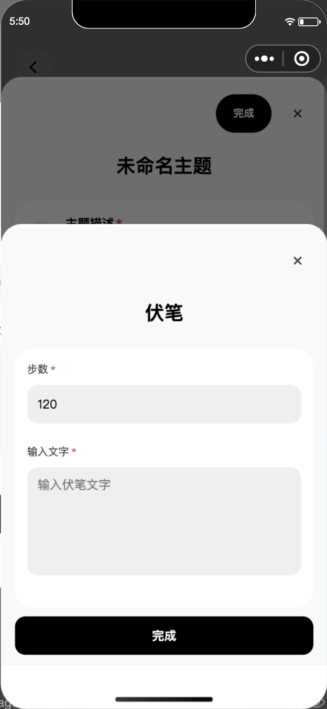
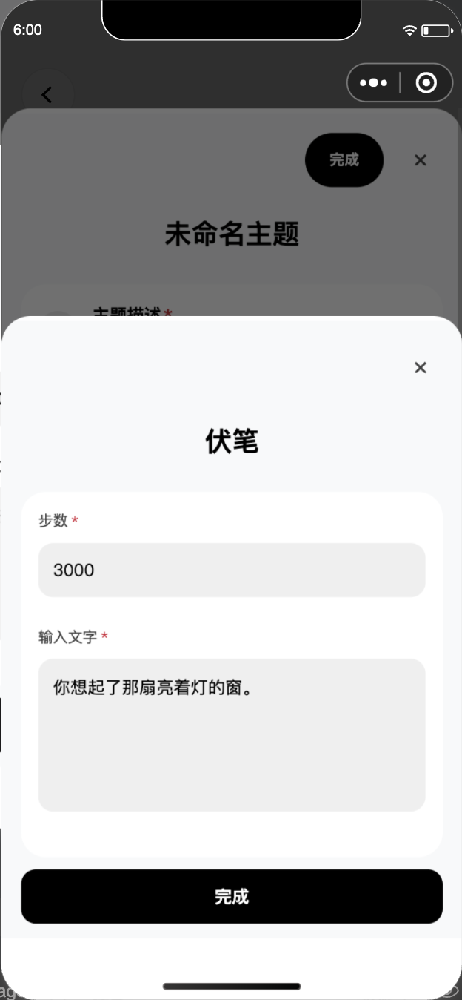
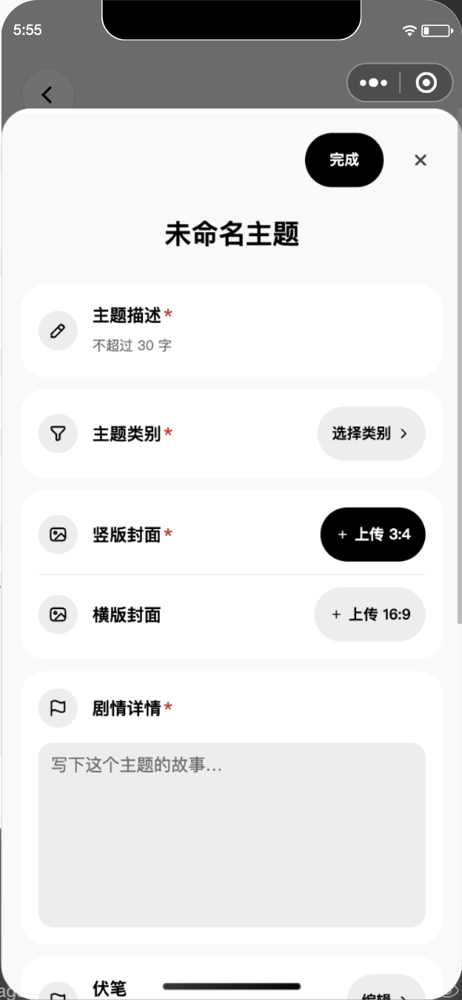
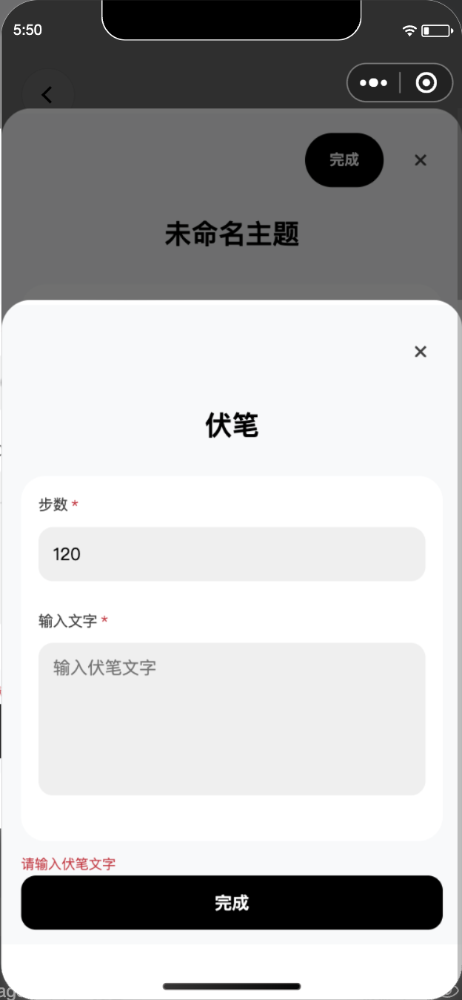
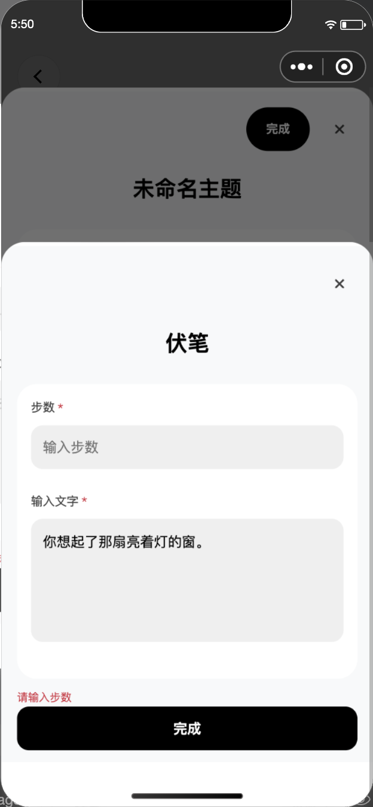
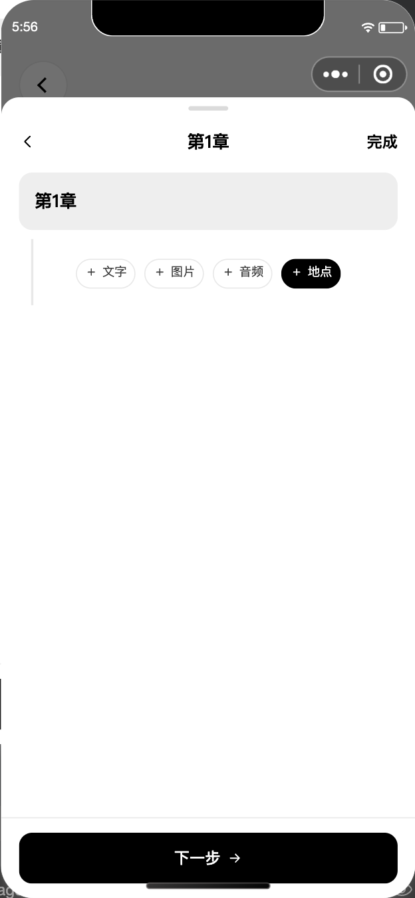

编辑主题里的原有伏笔弹窗
入口：编辑主题 → 主题详情 → 伏笔。 保留之前确认的底部弹窗，只有步数和文字两个必填项，灰色输入框，底部“完成”。一个主题只配置一个伏笔。
之前加入正文伏笔入口、要求在正文插入伏笔的流程说明已撤回。正文菜单恢复为文字、图片、音频、地点；玩法从地点配置里开启。
按原有入口操作
1 · 点“添加”打开配置


2 · 填写步数和文字


3 · 点底部“完成”返回


4 · 重新打开仍是同一个

两项必填都已核对




撤掉误加的正文入口

验证记录
45 项相关检查通过，语法、范围检查和原生模板/样式编译通过。入口与完成按钮使用模拟器原生点击；输入值通过组件 input 事件填写，未验证真机键盘。
测试草稿已经恢复；独立新页面读回：0 章节、0 伏笔，与测试前的本机存储一致。未保存真实主题、发布或进行正式玩家推进。
工作树：/Users/arlan/.codex/worktrees/thought-config-1005/chengyin
分支：feature/thought-config-1005
源码：470a9403c745daa83a456090904fe12d23fdc8a9
本轮验证记录 · 原生动作记录 · 45 项检查输出 · 本轮修改前的原有弹窗

本页只验证编辑主题中的伏笔配置，不作为玩家获得或应验伏笔的全链路验收。之前将正文伏笔入口缺失判为缺陷，是错误理解，已撤回。